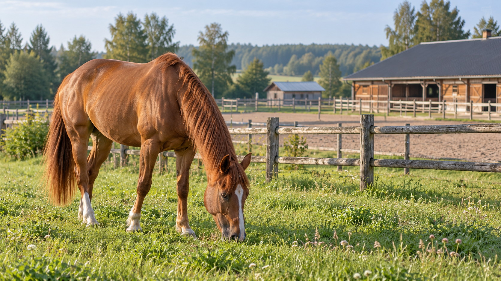

Pažintinė pamoka
Pirmasis susitikimas su žirgu, saugumo pagrindai ir ramus pasivaikščiojimas balne.
nuo 30 €Rinktis ↗

Jojimo pamokos, kantrūs treneriai ir tikras ryšys su žirgais. Neskubame — mokomės, atrandame ir augame savo tempu.
Tai laikas sustoti, pasitikėti ir atrasti savo drąsą. Šilo žirgyno demonstracinė istorija sukurta tam, kad parodytų, kaip tikra jojimo mokykla galėtų prisistatyti nuoširdžiai ir be perteklinių efektų.
Pažinkite mūsų pamokas ↗Aiškios paslaugos, kainos ir kelias į registraciją — lankytojas neturi spėlioti, nuo ko pradėti.
Pirmasis susitikimas su žirgu, saugumo pagrindai ir ramus pasivaikščiojimas balne.
Mažos grupės, individualus trenerio dėmesys ir bendruomeniškas mokymasis.
Daugiau asmeninio dėmesio ir nuoseklus darbas siekiant savo tikslų.
Pateiktos kainos yra iliustracinės, skirtos tik dizaino demonstracijai.
Kiekvienas treneris — su savo požiūriu, specializacija ir pamokų laiku.
Kantrus, aiškus mokymas ir pasitikėjimu grįstas ryšys. Ieva padeda pradedantiesiems atrasti balansą balne bei jaustis saugiai nuo pirmos pamokos.
Peržiūrėti Ievos laikus ↗Struktūruotos treniruotės ir aiškūs tikslai. Mantas orientuojasi į techninį progresą, žirgo supratimą ir raitelio savarankiškumą.
Peržiūrėti Manto laikus ↗Švelnus tempas ir kruopštus pasiruošimas. Aušra padeda rasti individualų mokymosi ritmą įvairaus amžiaus raiteliams.
Peržiūrėti Aušros laikus ↗Trenerių vardai, aprašymai ir laikai yra fiktyvūs.
Pasirinkite pamoką, trenerį ir tinkamą laiką. Tvarkaraštis yra atskirame, patogiame puslapyje.